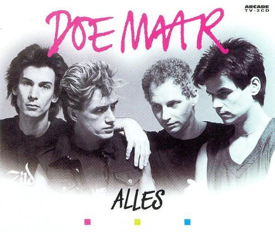

Enifled

Persoonlijke informatie
- Naam: Enifled Anre Obyw
- Adres: Sint-Pietersstraat 102, 8000 Brugge
(vanaf 1 september: Noordstraat 32, 8490 Jabbeke) - Telefoonnummer: 0489722617
- E-mailadres: enifled@live.be
Hobbies
Lezen
Lezen is iets dat mij echt kan ontspannen. Persoonlijk vind ik dat je je veel beter kan inleven in een boek, dan in een film. Je kan je eigen interpretatie geven aan het verhaal en de personages naar je hand zetten. Ik probeer toch zeker iedere avond een half uurtje te lezen. Momenteel ben ik dit boek aan het lezen.
Breien
Mijn moeder heeft me leren breien toen ik klein was. Ik hou van breien, maar het lukt mij niet vaak om een projectje volledig af te werken. De afgelopen jaren heb ik regelmatig geprobeerd om een trui te breien voor mijn metekindje Marie, maar tegen dat de trui af was, was hij alweer te klein. Blijven proberen zeker? Dit is een link naar het patroon van de laatste trui die ik heb proberen breien.
Domme knutselwerkjes maken
Ik hou me graag bezig met dingen zoals diamond paintings maken en kleuren in een kleurboek. Ook al ben ik niet direct een fan van hoe deze knutselwerkjes er uiteindelijk uitzien, vind ik wel rust in het maken ervan. Laatst heb ik deze diamond painting afgewerkt.
Likes
- Mijn favoriete film is Legally Blonde.
Wikipedia-pagina Legally Blonde - Dit zijn mijn favoriete bands:
- The Police

Wikipedia-pagina The Police - Doe Maar

Wikipedia-pagina Doe Maar - Stoned Jesus

Facebook-pagina Stoned Jesus
- The Police